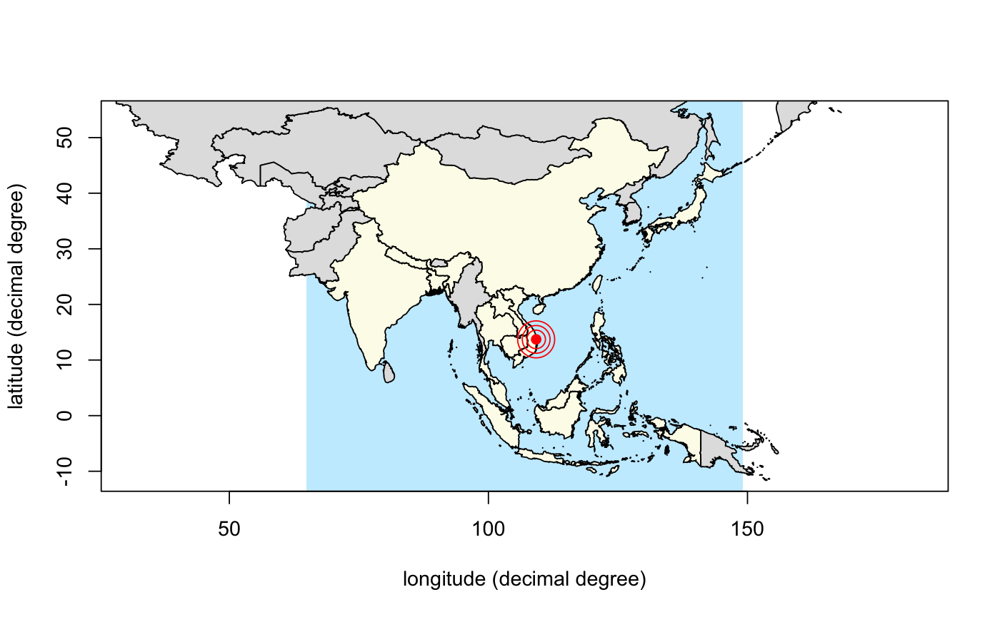

Contains the countries maps of Southeast Asia from GADM.
Available maps are bhutan, cambodia, china, india, indonesia, laos, malaysia, myanmar, nepal, papuanewguinea, philippines, taiwan, thailand, vietnam.
## Plotting Vietnam in Southeast Asia: library(sp) # "plot" library(gadmSEA) # "vietnam" library(dplyr) # "mutate" function and the " %>% " pipe operator#> #>#> #> #>#> #> #>### defining colors: rgb2 <- function(...) rgb(..., max = 255) blue <- rgb2(200, 237, 255) grey <- rgb2(225, 225, 225) yellow <- rgb2(253, 252, 235) ### the map: plot(vietnam, xlab = "longitude (decimal degree)", border = NA, ylab = "latitude (decimal degree)", bg = blue)mcutils::datasets("gadmSEA") %>% as.data.frame(stringsAsFactors = FALSE) %>% setNames("country") %>% mutate(col = ifelse(country == "vietnam", yellow, grey)) %$% invisible(purrr::map2(country, col, ~ plot(get(.x), col = .y, add = TRUE)))#> Error in mcutils::datasets("gadmSEA") %>% as.data.frame(stringsAsFactors = FALSE) %>% setNames("country") %>% mutate(col = ifelse(country == "vietnam", yellow, grey)) %$% invisible(purrr::map2(country, col, ~plot(get(.x), col = .y, add = TRUE))): impossible de trouver la fonction "%$%"axis(1); axis(2); box(bty = "o")## Plotting some countries in southeast Asia: library(sp) # for "plot" library(gadmSEA) # for the countries library(magrittr) # for " %$% " and " %>% " rgb2 <- function(...) rgb(..., max = 255) blue <- rgb2(200, 237, 255) grey <- rgb2(225, 225, 225) yellow <- rgb2(253, 252, 235) ### the map: plot(vietnam, xlab = "longitude (decimal degree)", border = NA, ylab = "latitude (decimal degree)", bg = blue, xlim = c(68, 146), ylim = c(-11, 54))ctr <- c("vietnam", "philippines", "cambodia", "japan", "china", "thailand", "singapore", "indonesia", "malaysia", "taiwan", "bangladesh", "laos", "india", "nepal") mcutils::datasets("gadmSEA") %>% as.data.frame(stringsAsFactors = FALSE) %>% setNames("country") %>% dplyr::mutate(col = ifelse(country %in% ctr, yellow, grey)) %$% invisible(purrr::map2(country, col, ~ plot(get(.x), col = .y, add = TRUE)))axis(1); axis(2); box(bty = "o")points(109.215971, 13.715266, col = "red", pch = 19)points(109.215971, 13.715266, col = "red", cex = 2)points(109.215971, 13.715266, col = "red", cex = 3)points(109.215971, 13.715266, col = "red", cex = 4)